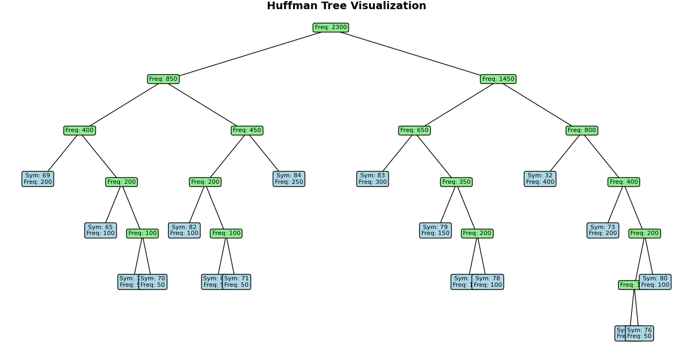
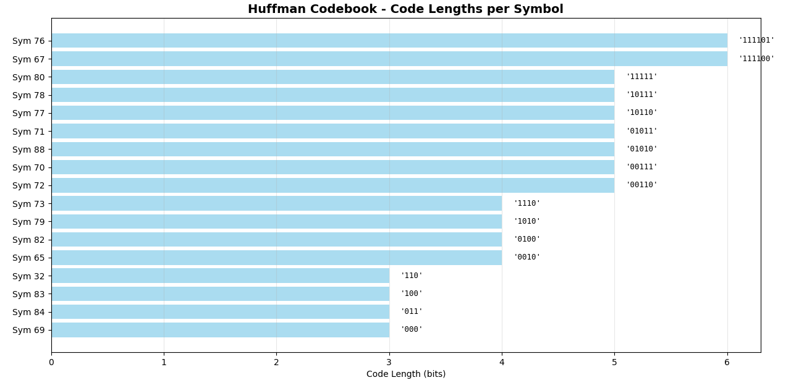
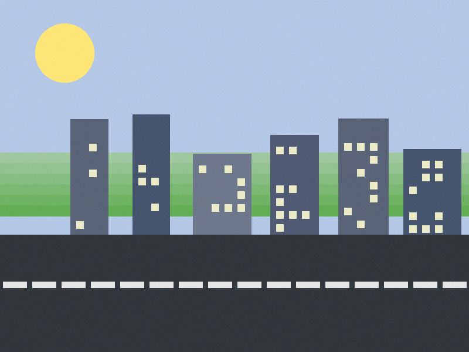
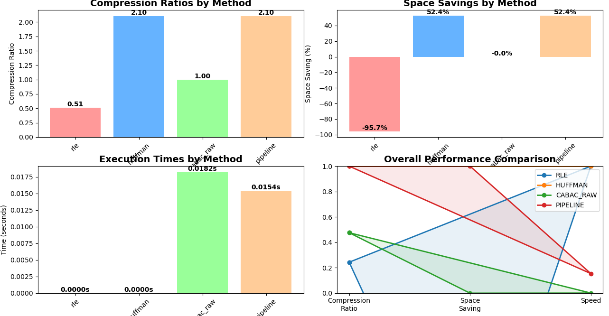

This project implements a multi-stage lossless image compression pipeline using:
Huffman Coding for entropy coding of symbol sequences.
A simplified CABAC-like binary arithmetic coder for compressing bitstreams.
Run-Length Encoding (RLE) as a baseline for comparison.
The assignment requirements were:
Implement Huffman Coding from an empirical frequency table derived from data/image data.
Visualize the Huffman tree and the generated codebook.
Encode image data using the Huffman implementation.
Implement a simplified CABAC that compresses binary data and apply it to the Huffman-encoded image data.
Integrate Huffman and CABAC into a single compression tool.
Compare compression ratio and speed against a simple RLE implementation.
Explain design decisions, algorithms and optimizations, and present the solution as a video or website.
This website presents my solution, explains the algorithms and design choices,
and shows performance results and example visualizations.
2. System Overview
The solution is implemented as a Python console application with a modular design.
The core components are:
HuffmanCoding – builds frequency tables, Huffman trees, and codebooks, and encodes/decodes data.
WorkingCABAC – simplified CABAC-style binary arithmetic coder for bitstrings.
RLEEncoder – classic run-length encoding for comparison.
MultiLosslessCodingPipeline – orchestrates loading data, running Huffman/RLE/CABAC and collecting statistics.
The typical pipeline for image data is:
Load an image and convert it to grayscale bytes.
Build a frequency table and Huffman tree from the pixel values.
Encode the image using Huffman (producing a bitstring).
Apply simplified CABAC to the Huffman bitstring.
Record compression ratio, space saving, and runtime.
High-level pipeline from raw image bytes to Huffman + CABAC compressed data.
(Optional diagram – not required for the assignment.)
3. Algorithms
3.1 Huffman Coding
Huffman Coding is an entropy coding algorithm that assigns shorter bit codes
to more frequent symbols and longer codes to less frequent ones. It guarantees an optimal
prefix-free code for a known frequency distribution.
Steps in my implementation
Compute a frequency table using collections.Counter over the input bytes.
Build a priority queue (min-heap) of leaf nodes (symbol, frequency).
Repeatedly merge the two lowest-frequency nodes into a new node until one root remains.
Traverse the tree:
Left edge = append "0"
Right edge = append "1"
This generates a prefix-free codebook mapping symbols to bitstrings.
Encode the data by replacing each symbol with its bitstring.
Visualization
The application produces two kinds of visualizations using Matplotlib:
Huffman tree plot – nodes with frequencies, edges, and a layout showing the tree structure.
Codebook plot – bar chart of code lengths per symbol, annotated with the corresponding bit codes.

Example Huffman tree for one of the test images. More frequent symbols appear closer
to the root and therefore receive shorter codes.

Example Huffman codebook visualization: each bar shows the code length of a symbol,
with the actual bit pattern printed on top.
3.2 Simplified CABAC (Binary Arithmetic Coding)
CABAC (Context-Adaptive Binary Arithmetic Coding) is a powerful entropy coder used in video
codecs like H.264/AVC. For this assignment, I implemented a simplified, non-context-adaptive
variant for binary data (bitstrings).
Key simplifications in my version:
Single global probability model (e.g. P(1) = 0.5) rather than context modeling.
No adaptation of probabilities over time.
Standard interval subdivision arithmetic coding for 0/1.
Encoding process
Represent the current range as [low, high).
For each bit:
Split the range into two subranges for 0 and 1 based on the probability.
Select the subrange corresponding to the actual bit.
At the end, output a value inside the final range as the compressed representation.
The implementation includes both encode and decode functions and can verify that
the original bitstring is recovered.
3.3 Run-Length Encoding (RLE)
RLE is used as a baseline for comparison. It compresses sequences of repeated bytes by replacing
them with (value, run-length) pairs.
My implementation:
Traverses the data once, counting consecutive equal symbols.
Stores encoded output as simple (value, count) pairs.
Includes a matching decoder to reconstruct the original data.
RLE works well on data with long runs (e.g. flat areas in an image), but often performs poorly
on natural images compared to Huffman/CABAC.
4. Implementation Details & Design Decisions
4.1 Language and Libraries
Language: Python
Libraries:
Pillow – loading and converting images to grayscale byte arrays.
matplotlib – visualizing Huffman trees, codebooks, and performance results.
collections.Counter – building frequency tables.
heapq – priority queue for building Huffman trees.
time – basic runtime measurements.
4.2 Data Flow
Image loading: images are loaded in grayscale mode, producing a flat list of pixel values (0–255).
Huffman: the frequency table is computed from pixel values; Huffman then produces a bitstring.
CABAC: the Huffman bitstring is fed into the simplified CABAC coder, which outputs a more compact representation.
RLE: operates directly on the original bytes for baseline comparison.
4.3 Design Choices
Modular structure: Huffman, CABAC, RLE, and pipeline logic are separated into classes.
This makes it easy to test and compare each part independently.
CLI menu interface: the program uses a text-based menu for:
Choosing input (image file, arbitrary binary file, or sample data).
Running the full Huffman + CABAC pipeline.
Running RLE, Huffman, or CABAC alone.
Displaying visualizations.
Simplified CABAC: probability model kept deliberately simple to focus on the
basic principle of arithmetic coding rather than full context modeling.
5. Performance & Benchmarks
The program automatically records and prints the following metrics for each method:
Original size (bytes)
Encoded size (bytes)
Compression ratio (original / encoded)
Space saving (%)
Runtime (seconds)
5.1 Comparison Methods
The following methods are compared:
RLE only on original data
Huffman only on original data
CABAC only on original data (bitstring form)
Full pipeline: Huffman → CABAC on original data
5.2 Experimental Results on Test Images
I evaluated the compressor on four different grayscale images that represent
different types of content: a natural landscape, a forest with lots of fine detail,
a cartoon-style city, and a binary black/white marker. The tables below show
the measured compression ratio (original / encoded), space saving, and runtime
for each method.
5.2.1 Natural landscape (3000 × 2000)
File: landscape.png
Natural landscape with water, mountains and sky. This image has rich textures and
smooth gradients, which makes it a good test case for general image compression.
Method
Original (bytes)
Encoded (bytes)
Ratio
Space Saving
Time (s)
RLE
6,000,000
8,978,362
0.67 : 1
−49.6 %
1.0512
Huffman
6,000,000
5,798,557
1.03 : 1
3.4 %
1.1288
CABAC (raw)
6,000,000
6,000,001
1.00 : 1
−0.0 %
106.8901
Huffman → CABAC
6,000,000
5,798,557
1.03 : 1
3.4 %
75.9387
5.2.2 Forest path (612 × 408)
File: forrest.png
Forest scene with a narrow path and dense vegetation. This image contains a lot of fine,
high-frequency detail, which is typically hard to compress efficiently.
Method
Original (bytes)
Encoded (bytes)
Ratio
Space Saving
Time (s)
RLE
249,696
475,760
0.52 : 1
−90.5 %
0.0621
Huffman
249,696
216,493
1.15 : 1
13.3 %
0.0421
CABAC (raw)
249,696
249,697
1.00 : 1
−0.0 %
3.3306
Huffman → CABAC
249,696
216,493
1.15 : 1
13.3 %
7.7330
5.2.3 Cartoon city (800 × 600)
File: cover_test.png

Cartoon-style cityscape with flat color regions and simple shapes. This is a more
synthetic image with lower visual entropy, which should give better compression
than natural photos.
Method
Original (bytes)
Encoded (bytes)
Ratio
Space Saving
Time (s)
RLE
480,000
828,166
0.58 : 1
−72.5 %
0.1560
Huffman
480,000
332,814
1.44 : 1
30.7 %
0.1106
CABAC (raw)
480,000
480,001
1.00 : 1
−0.0 %
5.5541
Huffman → CABAC
480,000
332,814
1.44 : 1
30.7 %
4.4103
5.2.4 Binary marker (128 × 128)
File: payload_test.png
Binary marker consisting mainly of black and white pixels. This image has many long
runs of identical values and is a perfect match for RLE-style compression.
Method
Original (bytes)
Encoded (bytes)
Ratio
Space Saving
Time (s)
RLE
16,384
2,244
7.30 : 1
86.3 %
0.0051
Huffman
16,384
2,584
6.34 : 1
84.2 %
0.0081
CABAC (raw)
16,384
16,385
1.00 : 1
−0.0 %
0.2022
Huffman → CABAC
16,384
2,584
6.34 : 1
84.2 %
0.0397
5.3 Visualizations
The Python program also generates performance plots using Matplotlib, e.g. bar charts
for compression ratio, space saving and runtime, and a combined radar chart for a
quick visual comparison.

Example performance visualization combining compression ratio, space saving and
runtime for all methods. (Screenshot exported from the Matplotlib window.)
5.4 Analysis
The experiments confirm the expected behaviour of the different compression methods:
RLE performs very poorly on natural and detailed images
(landscape, forest, cartoon city), where it even increases the file size by
50–90 %. However, on the binary marker it achieves the best compression
overall (7.30 : 1), thanks to very long runs of identical pixels.
Huffman Coding is robust across all images and consistently
achieves positive compression gains. On natural photos the gain is modest
(about 3–13 %), but on simpler images like the cartoon city it reaches
about 30 % space saving.
The simplified CABAC implementation with a fixed probability
model does not improve compression. The encoded size stays essentially equal
to the input size and the runtime is significantly higher, especially for the
large landscape image. This shows that a non-adaptive arithmetic coder with an
unsuitable probability model cannot outperform an already entropy-coded stream.
The combined Huffman → CABAC pipeline ends up with the same
size as the pure Huffman output but with higher runtime. This underlines that
once Huffman has already produced a near-optimal bitstream, an additional
coding stage needs a much more advanced, context-adaptive model to provide
further gains.
Overall, the results nicely illustrate the trade-offs between a very simple but
sometimes effective method (RLE), a general-purpose entropy coder (Huffman),
and a more complex but here oversimplified arithmetic coder (CABAC).
6. How to Run the Program
Install dependencies:
pip install pillow matplotlib numpy
Run the main script:
python app6.py
Use the menu to:
Load an image file (for Huffman + CABAC pipeline).
Load an arbitrary binary file.
Use sample data for testing.
Run:
Full Huffman + CABAC pipeline
RLE only / Huffman only / CABAC only
Visualize Huffman tree and codebook
Visualize performance comparisons
7. Code & Files
The main implementation is contained in the file app6.py, which defines:
This project demonstrates a complete lossless image compression pipeline that combines
Huffman Coding and a simplified CABAC coder, with RLE as a baseline. The implementation includes
visualizations of the Huffman structures and detailed performance benchmarks for compression ratio,
space saving, and runtime.
All assignment requirements are covered:
Huffman implementation with tree and codebook visualization.
Simplified CABAC for binary data, applied to Huffman-encoded images.
Integrated tool with RLE comparison.
Performance benchmarks and explanation of design decisions.
This website serves as the required presentation of the solution.